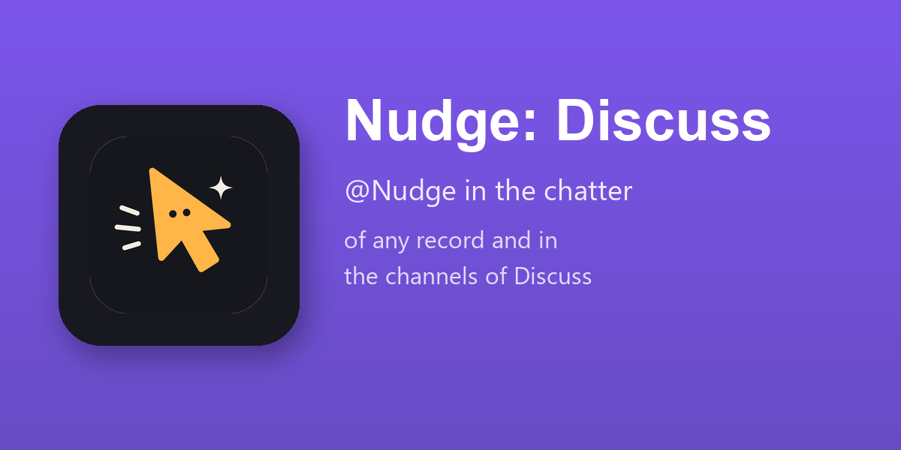

"@Nudge summarise this order", "@Nudge who has to approve it?", "@Nudge what is missing before we can confirm?". The answer is an internal note under the question, and the one who asked is told.
"@Nudge how do we record a landed cost?" Nudge reads the last messages of the channel and answers in it, with the page of the official documentation it used.
Nudge answers as the person who asked, from what every reader of the record sees: its fields, the records it links to, the last messages. Fields kept for some groups are left out, and no other record is looked up: an answer the whole team reads holds nothing it should not.
A mention never changes a record. Asked to, Nudge says what would change and points to its panel, in Agent mode, where every change waits for a yes.